Hybrid Images using FFT
| Class | Instructor | Date | Language | Ta'ed | Code |
|---|---|---|---|---|---|
| CS 6476 Computer Vision | James Hays | Fall 2015 | MATLAB | No | Code N/A |
This image will haunt me the rest of my life.
Highlights of My Implementation for Project 1
- Dual filter cuttoffs (for low frequency and high frequency image)(Possible EC?)
- Mirrored Boundaries
- 3 algorithmic implementations - naive, fft(matlab's implementation), fft(my own implementation of fft) (Possible EC?)
A hybrid image is one in which two different, but similar, images are combined in such a way that one image is more recognizable from a distance while another is more obvious up close. This occurs because the human mind classifies images based, in large part, on the detail that is visible. When an image is blurry and lacks crisp detail, its subject can be hard to determine, while very little of an image need be present for the image to be recognizable if what is present is the high frequency content that is perceived as detailed edges and textures. Of course, an image that is blurry when viewed up close will seem more clear, or at least not seem as blurry, when seen from a distance. This is because detail becomes less perceptible over distances. These observations are behind the concept of a hybrid image - a blurry image up close ends up being less recognizable and easily overshadowed by the detail from a similar image overlayed on it. Once this image is made small, or distant from the observer, the added detail is lost and the original, blurry image, is more recognizable.
The hybrid effect is accomplished by filtering two images with a gaussian blur, removing the high frequency from both of them. The image that is intended to be used as a high frequency detail template is made by subtracting the blurred image from the original, leaving behind the components that had been filtered out. The two images are then overlayed and the result is the hybid image.
Implementation Details
For my implementation of this project, I used the included MATLAB stub code.
The mirrored boundaries of a single color channel of dog.bmp
The primary components of this project are each of the source images, the filter kernel to be used to blur them, and the algorithm by which the filter is applied to the image to accomplish the blur. The filter used is a gaussian filter of variable STD, which describes the width of the filter. I chose to implement separate filters for each of the source images, to allow for different filtering thresholds for the high frequency and low frequency components of the resultant hybrid image. I accomplished this by sweeping through 1 to 10 by integers for each filter's STD element, and choosing the most visually appealing result for each. The values I used on the 5 provided images are listed below with the images themselves.
I chose to mirror the boundaries of the image so that there would be no artifacts from the filtering process. This was not difficult, particularly with MATLAB's powerful, built-in matrix handling. The code I wrote to accomplish this is below :
%Boundary Mirroring
%copy base image into the middle of pre-configured expanded image destination
%imgChn is the pre-allocated result matrix
%imgBaseChn is a matrix of intensity values of a single channel of the original image
imgChn(stRowsBnds:endRowsBnds,stColsBnds:endColsBnds) = imgBaseChn(:,:);
%flip first cols of original image for out-of bounds image
imgChn(stRowsBnds:endRowsBnds,1:imgBnds(2)) = fliplr(imgBaseChn(:,1:imgBnds(2)));
%flip last cols of original image for out of bounds image
imgChn(stRowsBnds:endRowsBnds,(endColsBnds+1):end) = fliplr(imgBaseChn(:,(end-imgBnds(2)+1):end));
%now dupe upper and lower rows, which will also copy into corners
imgChn(1:imgBnds(1),:) = flipud(imgChn(stRowsBnds:(stRowsBnds+imgBnds(1)-1),:));
imgChn((endRowsBnds+1):end,:) = flipud(imgChn((endRowsBnds-imgBnds(1)+1):endRowsBnds,:));
Algorithms
To filter an image involves convolving a symmetrix odd dimensional filter matrix with a matrix representation of a single color channel of an image. The baseline, naive implementation of this is accomplished via nested for loops, where, for every pixel of the image, the filter values are multiplied by the image intensity values surrounding a single pixel via a dot product, and the scalar result of this dot product is used to replace the original pixel value. This is repeated for each color channel, the extra boundary reflection component of the image is cropped, and the resultant blurred image is returned.
%naive filter Implementation
for rowIdx = 1:imageWidth
resRowIdx = rowIdx+imgRowBoundarySize;
endRowIdx = rowIdx + originalRowImageSize-1;
for colIdx = 1:imgBnds(8)
resColIdx = colIdx+imgColBoundarySize;
endColIdx = colIdx + originalColImageSize-1;
%resBlock = imgChn(rowIdx:endRowIdx, colIdx:endColIdx) .* filter;
resPxl = sum(sum(imgChn(rowIdx:endRowIdx, colIdx:endColIdx) .* filter));
resImg(resRowIdx,resColIdx) = resPxl;
end
end
The naive implementation can be fairly slow - it's an O(N^3) algorithm, similar to multiplying two polynomials together; however, similar to polynomial multiplication, the use of the Fast Fourier Transform can convert this problem to linear time by using a simple fact - convolution in the "time" domain is the same as multiplication in the frequency domain.
This can be illustrated with the polynomial multiplication example. Imagine that each of the filter values in the filter matrix were coefficients of a polynomial of degree n, where n is the number of pixels in the source image, and the intensity value of each of the pixels in the source image is also a coefficient of another polynomial of same degree. What we are doing when we filter the image is effectively multiplying these two polynomials together - that's what convolution is.
|
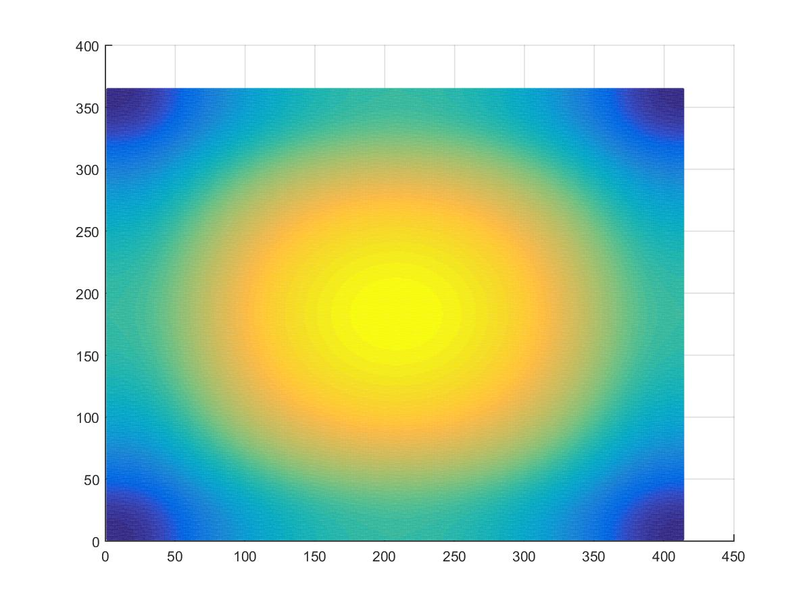
A Gaussian Filter in the Frequency Domain is ... still a Gaussian. |
The cool thing about polynomials, particularly for this application, is that you can uniquely represent the line described by a polynomial of degree n by using n+1 values for the polynomial - two points describe a line, which is a first order polynomial. Three will uniquely describe a parabola, and so on. Why do we want these values? Because you can find the result of the convolution process by just multiplying these values together individually, instead of the nested-loop matrix multiplications. Finding these unique values is what the FFT does.
To use the FFT, the filter needs to be made as large as the image (padded with 0 values), and (for some algorithms) both filter and image need to be padded with 0's to the next largest power of two. Then, both filter and image are passed through the FFT algorithm, where they are transformed into the frequency domain. They are then multiplied together, and then the inverse transformation is applied to translate the resultant image back from the frequency domain to the "time" domain to reveal the resultant image. The speed of this process is very fast, and using the MATLAB optimized implementations of fft2 and ifft2, the process is finished about as fast as the built in implementation of imfilter. The code accomplishing this can be seen below (using built in matlab fft2 and ifft2 functions).
%fft base
tmpFFTImg = fft2(double(imgChn));
fftFilter = fft2(filter);
%multiply fft values
fftImgProd = tmpFFTImg.*fftFilter;
%inverse fft to get result image
resImgFFT = ifft2(fftImgProd);
Of course, I felt that using the built in version of fft was sorta cheating, so I coded my own. I based my implementation on one I wrote a while ago using an algorithm from Numerical Recipes In C, a classic book of algorithm implementations. However, the code was not designed for a language with the built in vectorization capabilities of MATLAB, and so I had to re-design it from scratch to get it to work reasonably in MATLAB, and I learned a few things on the way. For one, the bitshift function in matlab is about 100x slower than just multiplying or divding by 2, which is counter-intuitive. My original fft implementation used loops to derive indexes during the computation, where large, precomputed, vectors of indexes would better serve in MATLAB. This implementation also was originally designed for an environment with no native sense of complex numbers, so I had to store the real and imaginary parts of each value in separate locations - I used the odd idxes for the real components and the even idxs for the imaginary ones. Multiplying the values together was also interesting - I used an algorithm originally discovered by Gauss to multiply two Complex numbers using only 3 multiplications (instead of the usual 4 one would expect if using the FOIL method.
%Gaussian multiplication of two complex numbers (a + bi) * (c + di)
x = a*c
y = b*d
z = (a+b)*(c+d)
realPart = x - y
imagPart = z - x - y;
|
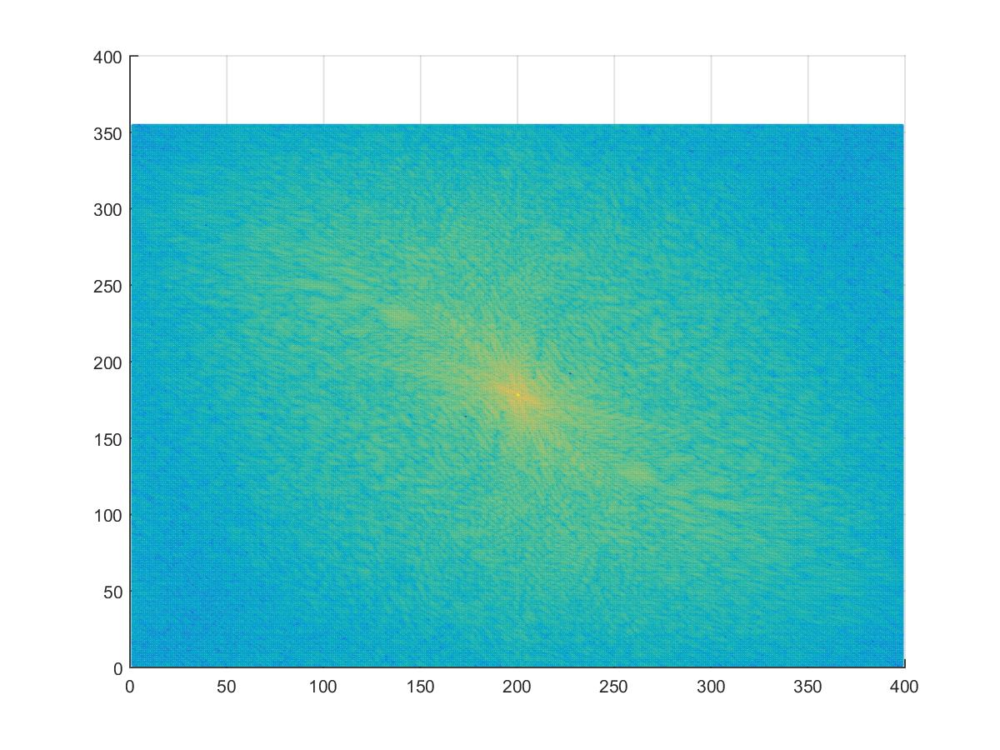
The blue channel of bird.bmp in the frequency domain.
|
My implementation of the Fast Fourier Transform wasn't as fast as MATLAB's native implementation, but it was still faster than the naive implementation of the convolution process. Here is the main code to process the fft. My actual implementations are in two functions in my_imfilter.m : my_fft, on line 304, which handles the conversion to and from the frequency domain, and appropriately handles real-only or real-and-complex vectors, and baseFFTCalc, on line 260, which does the actual fft computation (which is very similar to a Lagrange polynomial calculation, with a Vandermonde-like matrix of the nth complex roots of unity, where n is the next power of 2 larger than the image pixel count multiplying the individual intensity values of either the image or the filter.)
%my fft base
tmpFFTImg = my_fft(imgChn,1,imgBnds,fftConsts);
fftFilter = my_fft(filter,1,imgBnds,fftConsts);
%multiply fft values - arrays are set to be:
% odd idx -> real part
% even idx -> img part
%product of 2 imaginary #'s - use only 3 mults for speed
%(a + bi) * (c + di) = ac - bd + (bc+ad)i
ac = (tmpFFTImg(1:2:end).*fftFilter(1:2:end));
bd = (tmpFFTImg(2:2:end).*fftFilter(2:2:end));
%(bc+ad) = (a+b)(c+d) - ac - bd
ab_cd = (tmpFFTImg(1:2:end) + tmpFFTImg(2:2:end)) .* (fftFilter(1:2:end) + fftFilter(2:2:end));
fftImgProd(1:2:end) = ac - bd;
fftImgProd(2:2:end) = ab_cd - ac - bd;
%inverse fft to get result image
resImgFFT = my_fft(fftImgProd,-1,imgBnds,fftConsts);
Results
My results are shown below, and some of them are more convincing than others. I think the Cat-Dog hybrid is the best, and was easiest to fit good filter STD coefficients to, and the Fish-Submarine was also pretty easy to get some convincing results with. The Plane-Bird hybrid was more difficult to find good STD values for, as was the Bicycle-Motorcycle, although I think the values I picked worked fairly well. The Marilyn Monroe / Albert Einstein hybrid is just creepy. The values I used for each image are listed below with the images.
Blurred (low frequency) Images
| Blurry Dog : Dog Filter STD : 5 | Blurry Birdie : Tweety Filter STD : 6 |
| Blurry Sub : Sub Filter STD : 5 | Blurry Motorcycle : Motorcycle Filter STD : 8 |
| 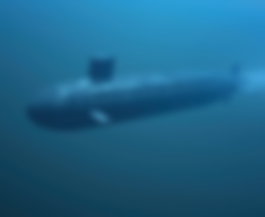 | 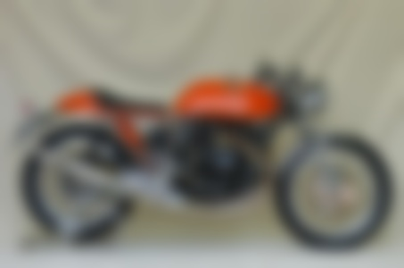 |
| Blurry Albert : Albert Filter STD : 3 | |
| 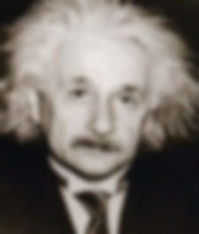 |
Edge (high frequency) Images
| Cat Ghost : Kittie Filter STD : 8 | Plane Ghost : Plane Filter STD : 5 |
| 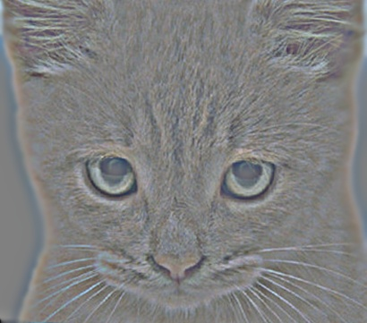 | 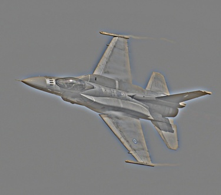 |
| Fish Ghost : Fish Filter STD : 5 | Bike Ghost : Bike Filter STD : 4 |
| 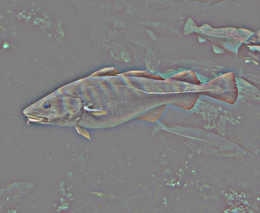 | 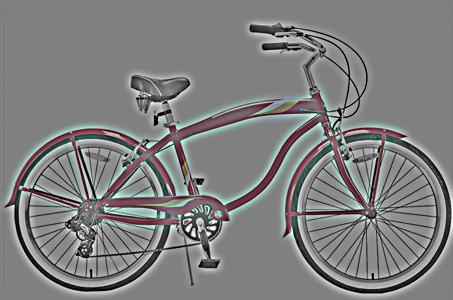 |
| Marilyn Ghost : Marilyn Filter STD : 5 | |
| 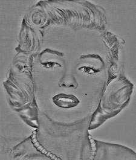 |
Hybrid Images
| CatDog : Dog Filter STD : 5 | Cat Filter STD : 8 | PlaneBird : Tweety Filter STD : 6 | Plane Filter STD : 5 |
| 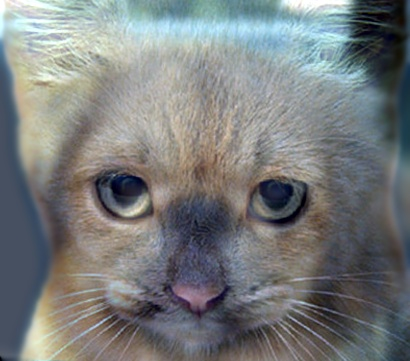 | 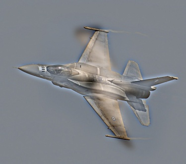 |
| FishMarine : Sub Filter STD : 5 | Nemo Filter STD : 5 | BiMotorCyle : Motorcycle Filter STD : 8 | Bicycle Filter STD : 4 |
| 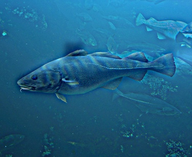 | 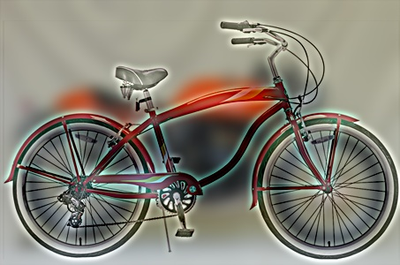 |
| Marilyn Einstein, PhD : Albert Filter STD : 3 | Blondie Filter STD : 5 | |
Scaled (Visualizaton) Hybrid Images
| CatDog : Dog Filter STD : 5 | Cat Filter STD : 8 |
| 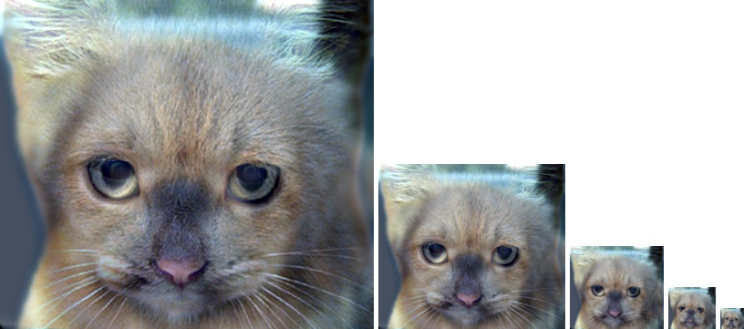 |
| PlaneBird : Tweety Filter STD : 6 | Plane Filter STD : 5 |
| 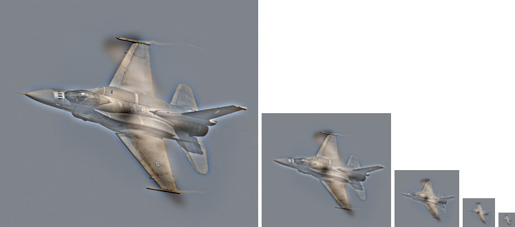 |
| FishMarine : Sub Filter STD : 5 | Nemo Filter STD : 5 |
| 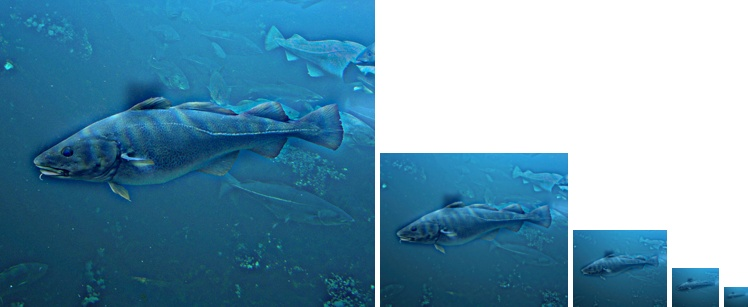 |
| BiMotorCyle : Motorcycle Filter STD : 8 | Bicycle Filter STD : 4 |
| 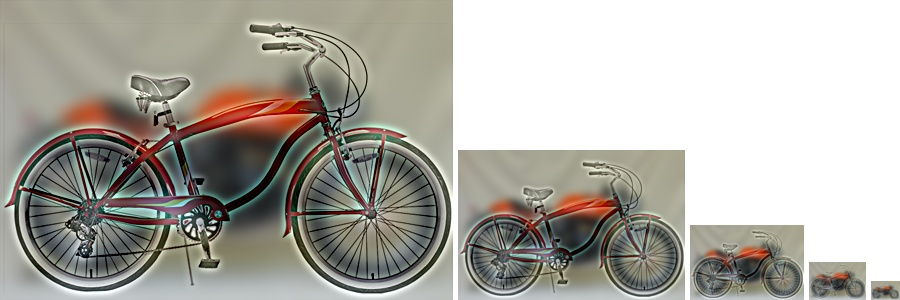 |
| Marilyn Einstein, PhD : Albert Filter STD : 3 | Blondie Filter STD : 5 |
| 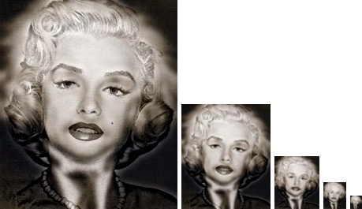 |